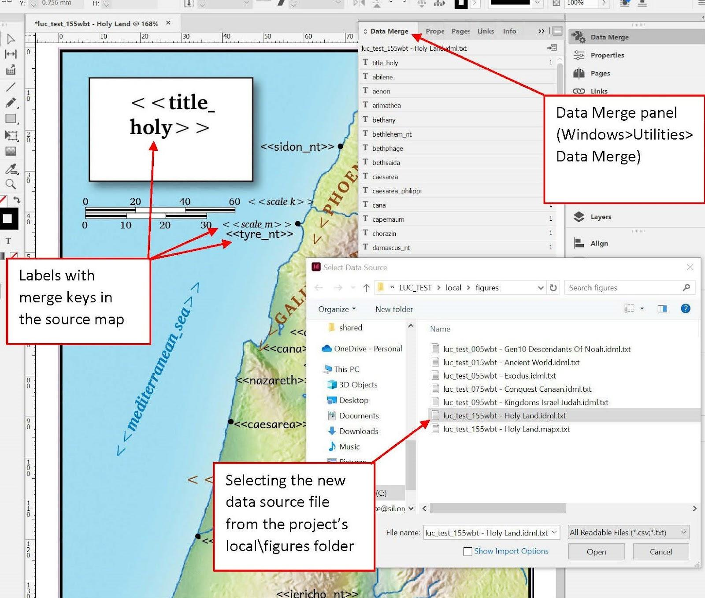
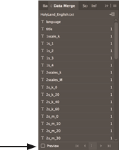
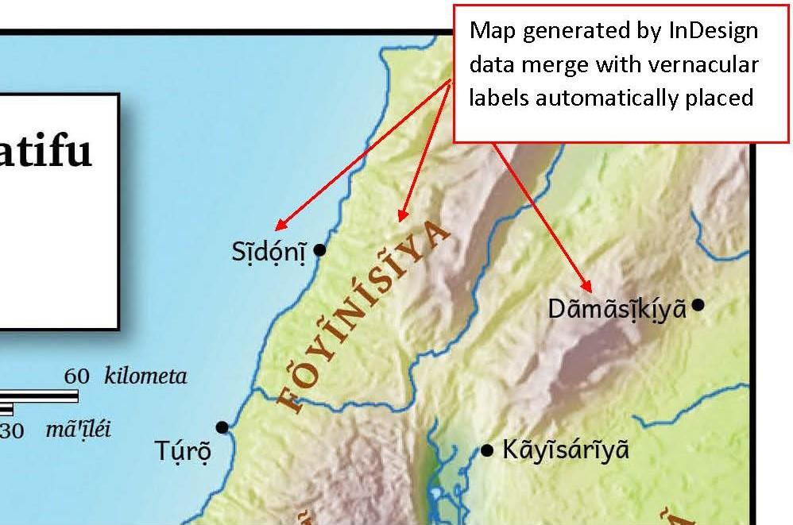
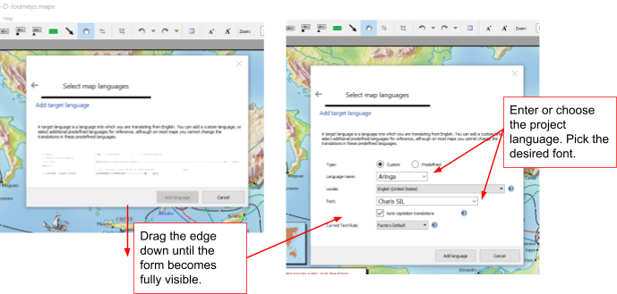
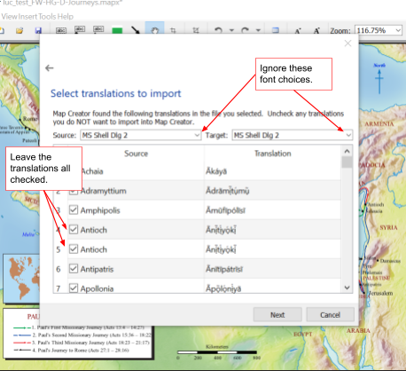
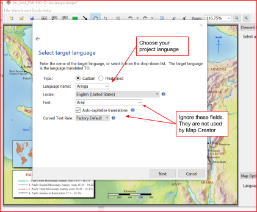
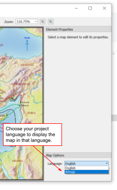
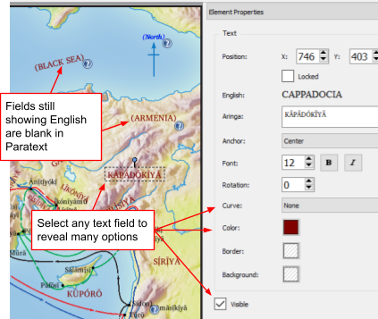

SIL Map Repository:
Instructions for Typesetters
Working with MAPX or IDML Files
Understanding Map Varieties
Similar maps are grouped with the same chronology number, which the
maps were grouped with for use with the predecessor system on PT9 known
as “SMP”. For example, 185 indicates maps relating to
Philip’s travels. In the SIL Map Repository (SMR), there are three
separate IDML files for 185wbt - Philips Travels:
|
185wbt - Philips Travels.idml
|
Full page color map
|
|
185wbt - Philips Travels [sm].idml
|
Shorter, more square color map
|
|
185wbt - Philips Travels [sm-bw].idml
|
Black & white version of the shorter map
|
Many maps have multiple options for display all within one IDML file.
As you browse through the map samples, the internal options used are indicated within parentheses. For
example, options on two varieties of the World map are (bbf, riv) and
(fcr):
|
265wbt - World [1pg] (bbf riv) @en.jpg
|
Black & Blue, showing rivers
|
|
265wbt - World [2pg-flipped] (fcr) @en.jpg
|
Full color relief
|
Please familiarize yourself with our maps’ filename conventions
described here.
WORKING WITH InDesign MAPS (see below for Map Creator maps.)
Using InDesign Data Merge - Create the InDesign file
-
For the map you wish to typeset, open the downloaded InDesign file
which does NOT have “@en” or other language code as part
of the filename. (All maps are now distributed as .idml files instead
of the usual .indd. This format is supported back to CS4.)
InDesign maps in SMP1 no longer have links to separate artwork files.
All content is embedded directly in the .idml file.
-
If your maps use a Roman-based writing system, all you’ll need
to do is ensure that the Charis SIL and Andika fonts are installed on your system. If you receive a message
that you have missing fonts, simply install the versions of these
fonts that can be found in the "Document fonts" subfolder in
the top level of "SIL Maps Repository".
-
Many of these InDesign maps support multiple options within one IDML
file, most often the map type (such as “full color relief”
or “black & white flat”) and sometimes other
variations (such as “complex routes” vs “simple
routes” on the Exodus map). You can manually toggle layers to
get the variation you’re wanting. Note that some paragraph
styles like “Ocean” and “Region” use color
swatches named “Water color” and “Region
color”, and if you’re wanting a black & white map,
you’ll need to change these paragraph styles to use the swatches
named “Water BW” and “Region BW” instead.
However, there’s a better option: You can install the MapMonkey script, and run this whenever you want to “monkey”
with the map options, either before or after the data merge. For
example, you might want a black & white map for your print
publication, but the color version of it for your Scripture app. For
more information, visit the MapMonkey page.
-
If your maps use a non-Roman writing system, you will need to ensure
that the definitions of the font1 and font2 paragraphs styles specify the font and any other properties that are
required for proper rendering. All styles used for labels inherit the
writing system properties from these two styles.
-
Example: For a map that uses Devanagari script and Western digits, in
the font1 and font2 paragraph styles, set the font to Annapurna SIL, set the justification to “Adobe World-Ready Paragraph
Composer”, and set the language to “Hindi”.
-
Alternatively, for this particular case, you may simply import these paragraph definitions from the Deva_AnnapurnaSIL_WesternDigits.indd file which can be found in the !Styles folder at the root of the map repository.
-
If the fonts that you are using do not have native bold and/or italic
faces, you will need to edit the respective paragraphs styles (e.g. font1 bold italic) to fake the face appropriately, such as by adding a very slight
outer stroke to fake bold, and/or skew for italics.
-
The Regions paragraph style typically employs expanded tracking in
Roman-script projects, but the amount of expansion may be
inappropriate in other writing systems. For this reason, you can
modify the expanded character style to set an appropriate tracking property.
-
If your writing system uses a numeral system supported natively by
InDesign, (that is, Bengali, Burmese, Devanagari, Farsi , Full Farsi,
Gujarati, Gurmukhi, Eastern Arabic [“Hindi”], Kannada,
Khmer, Lao, Malayalam, Oriya, Tamil , Telugu, Thai, or Tibetan), it
will not be necessary to manually replace the Western digits on the
map (such as for the scale) with local digits. InDesign can render the
normal digit characters (codepoints U+0030 to U+0039) as if they were
in various other numeral systems, without needing to replace the
actual numerical characters. The !AllDigitStyles.indd file (which can likewise be found in the !Styles folder) contains a paragraph style for each of these numeral
systems. By loading a style from that document into your map, and
basing a style in that document on this style, you can control the
digit system that InDesign uses to render normal digits.
-
For example, for a map that uses Devanagari script and Devanagari
digits, import the devanagari digits paragraph style into your map from the !AllDigitStyles.indd file, and then base the definition of font1 and font2 on this paragraph style.
-
Alternatively, for this particular case, you could import all
paragraph styles from the Deva_AnnapurnaSIL_DevaDigits.indd file into your map.
-
Once you have set up your font1 and font2 styles appropriately for your writing system, save a copy of this
document to be used as the import source for all maps. If it could be
helpful for other typesetters who may use the same writing system,
please submit a copy to the repository manager at maps-illustrationsrepository_intl@sil.org.
-
If you have all the needed fonts installed on your computer but you
are still seeing a pink highlight behind your text, that is an
indication that your font is still missing. Check to make sure there
are no Character Styles applied. Removing them should fix your
issue.
-
Open the Layers panel (Windows/Layers). This panel provides a number
of customization possibilities, so explore it thoroughly. There is
often a layer titled “Map Choices”. Click the > symbol
to the left to view the variations. Toggle the layer’s
visibility by clicking on the eyeball symbol.
-
If you choose a map that has a black & white layer available, you
can either apply the bw version of the styles to the appropriate
layers or redefine the “Regions”, “Water”, “Ocean”, and “Seas” paragraph styles to use the “BW” versions of the
color swatches. (e.g. Edit the style, and under Character Color,
instead of the “Region color” swatch, select the
“Region BW” swatch.)
Using InDesign Merge - Data Merging
-
Make a copy of the repository map (.idml) to work from. We recommend
saving the file in the project \local\figures directory and prefixing
the file with project name. Allow InDesign to change the
extension to .indd. (If the original was named e.g. 155wbt - Holy Land.idml, and your Paratext project was e.g. LUC_TEST, your master copy file
would be luctest_155wbt - Holy Land.indd)
-
Go to the InDesign menu item “Window” and navigate to
“Utilities”. Choose “Data Merge” from the
fly-out menu. Go to the Panel Menu icon (stacked horizontal lines in
the upper right corner of the Data Merge panel) and choose “Select Data Source.”

-
The data source files for each map will be found in the Paratext
Projects \local\figures folder, unless you specified another
destination. It is a text (.txt) file with the same name as the map
(including .idml), prefixed by the project name. For example, luctest_155wbt - Holy Land.idml.txt The list should populate the Data Merge panel.

Choose “Preview” by checking the box in the lower
left corner of the Data Merge panel. The text fields in your document
should change to reflect your own data, i.e. the vernacular text from
the project.
-
Continuing to work in preview mode, adjust your map as follows:
Using the Selection tool (top arrow in the toolbox), select any text
boxes that have a red “X” that indicates there is overset
text. You can also check for overset text by looking at the Preflight
Panel indicator / located at the bottom of your InDesign window:
Reposition and resize any text boxes as needed. Resizing is most easily
done with ctrl-alt-c (Fit frame to content) and the height and width
menus in the control panel. Of course you can click and drag as well.
You can adjust the font size of an individual entry or change the
paragraph style so that you adjust the size of all of the
“cities”, for example. Either can be appropriate at
different times.
Any fields that appear to be surrounded by "??" are verses
that contained no text in the XX book, i.e. they were overlooked or
skipped by the translators. Once they enter the required text, you will
need to re-merge per below, "Repeating the Merge Cycle."
Whenever you see “OMIT”, simply delete it and hide any
corresponding information (like the Mile scale) by un-ticking that
layer. In the SMP1 collection, removing dots for deliberately missing
cities is easy, as there is now a separate InDesign object for each
dot.
Now is the time - still in preview mode - to make any other cosmetic
changes to the map, as needed by the current project.
The cosmetic changes in mind are changing the visibility of various
layers, changing style attributes, and/or moving text labels.You should
not make changes directly to the preview text, not even inserting a line
break to wrap long text, as such changes will not be preserved when
doing the data merge. Rather, if you need a long label to be wrapped,
you should change the dimensions and/or other properties of the text
frame and/or paragraph. E.g. Change the text frame’s object style
to “multiline”. (Note that the paragraph’s
“Balance Ragged Lines” setting, which affects wrapping, is
turned on, as inherited from the font1 style.) It is recommended that you keep the data merge panel open
so that InDesign will prevent you from mistakingly editing the preview
text. Unless the data merge panel is open, the document will behave just
like an already-merged document, with editable labels. (It will be
possible AFTER step 6 in Repeating the Merge Cycle to edit the text and
preserve the change, but it is hoped that little of that will be
needed.)
Note that we have found that it is NOT necessary to actually use the
Merge button and create a second, merged InDesign file at this point. If
you save and export to jpg or to pdf with Preview mode turned on, the
files will be quite usable at this point. We do recommend doing the
final merge step and saving that file after you are certain the team
will make no more label changes. (See Repeating the Merge Cycle
below).

Saving your InDesign map file
Save the map in the project \local\figures directory e.g. as
above: luctest_155wbt - Holy Land.indd
Export your file as a *.jpg file at this time also and use this file to
insert \fig information into the Paratext Project at the appropriate
locations. If you have editing privileges to the project, you can do
this yourself or else share it with the team for them to do so.
Now you should have two map files in your project IDENTICALLY NAMED
except for their extensions. First - a master copy file (.indd)
containing all your edits and the original merge keys, which you will
re-use for subsequent merges. Second, a (.jpg) file placed into the
Paratext project.
Repeating the Merge Cycle
After each round of team proofing, there will typically be text and
spelling changes the need to be re-merged into the project maps:
-
Re-export the data merge files.
-
For each affected map, open the master file copy (.indd) and
“Update data source” on the Merge Tool menu.
-
Save each revised map according to "Export Map Merge
Files", replacing the previous vernacular (.indd) file.
-
When the team has fully approved the maps and no more map label
changes are expected, you can complete the final step of
“Merging” the document and creating a second InDesign file
with the labels actually embedded in the file.
-
Choose “Create Merged Document” from either the Panel
Menu or the “Merge Data” icon located just below the Panel
Options icon.
-
The Create Merged Document dialogue box will open. The default
settings will suffice; click OK when prompted. Note: While performing
the Merge task, your merged data will appear to revert back to the
generic data fields, but it is still there. Once the Data Merge is
completed, a new InDesign file with a “-1” added to the
name will be generated. We recommend your saving this file as an .idml file and removing the
-1. That way the files are identically named and you have not
overwritten your mergeable .indd file. The merged .idml file will
preserve the data more safely for long term archiving.
Bringing an InDesign map into Scripture Publications
-
InDesign maps (.indd files) should be placed directly into InDesign
Scripture documents. Publishing Assistant should automatically place
any map which has been formatted in Paratext using the \fig markup and
is located in the Paratext project’s local/figures folder.
Occasionally, you may still see the jpg being placed instead of your
.indd. The best way to fix this is to ascertain the exact
location of the \fig markup in Paratext and go to that location in the
InDesign file. Edit the fig markup and change the filename to have the
.indd extension. In PA6 jobs, you can find it using the Text Editor
(ctrl-y). In PA7 jobs, figure markup is found in the Conditional Text
Panel Menu. Make the “Hidden Illustration” text visible by
clicking in the first column on that line, edit the markup, and turn
off visibility again. In both cases, carefully verify that the
hidden attributes apply to your new edits. Then use PubAssist to place
the picture again.
-
When maps are placed directly in the Scripture text, they should have
the title layer turned off and the title should be included instead in
the caption and reference sections of the Paratext markup as
appropriate. Revisit all the maps after final validation to make sure
they (and the gutter rule) still look ok.
-
You may export the merged map to the jpg and PDF formats after final
validation.The PDF is useful for archiving.
-
When archiving the final publication files, make sure to archive the
local/figures folder as well.
WORKING WITH MAP CREATOR MAPS
Create the localized Map Creator file
-
Find the appropriate downloaded .mapx file for the map(s) you wish to
prepare.
-
Copy the file to the project's \local\figures folder. We
recommend following the naming convention of the generated merge
files.
If the original was named e.g. 245wbt -Seven Churches.mapx, and your Paratext project was e.g. Zezi, your map file would be 245wbt - Seven Churches @Zezi.mapx.
Add the language and import the labels.
-
Open the new file by double-clicking it. Map Creator should open the
file. You will see only English place names.
-
Add your project's language to the map by doing Tools> Change
Map Languages.
-
In the first dialogue, "Select source language," leave the
Source language English. The font doesn't matter on this dialogue.
Click Next.
-
In the next dialogue, "Summary of map languages," click the
button "Add target language".
-
In the Add target language dialog, select or add the desired
language. (Note that you may encounter a bug that prevents the dialog
from displaying properly. Just drag on the lower edge and stretch the
dialog down until the text becomes clear.)
-
Leave the Type Custom.Enter the Language Name (we suggest using whatever appears in the
Language settings of the Paratext project properties.) If you have
already done maps for this language, it should appear on the dropdown
list.
-
Choose an appropriate font from the list of your system fonts, e.g.
Charis SIL. This is the font that will be used to display all map text
on the translated map.
-
Choose whether to use Map Creator's auto-capitalization feature.
This should normally be left on unless your language has something
akin to uncapitalized prefixes.
-
If the writing system you are using is listed in the ‘Curved
Text Rule’ setting, select it. If there is not a setting that
enables text to break at appropriate points, please contact maps-illustrationsrepository_intl@sil.org with a description of the rules that determine where
breakpoints should be placed.
-
Click Add language, then Finish. Respond no to the prompt about
default language.
-
Import the map translations from the data file created by Map
Labeler.
-
Click on Tools > Import translations from a tab delimited text
file.
-
On the "Select file to import" dialogue, browse to
your project’s \shared\labeler\ directory and choose the .txt
file matching the name of your map, e.g. if project short name was Zezi and your map was 245wbt - Seven Churches.mapx, you should find an exported merge file named 245wbt - Seven Churches @Zezi.mapx.txt. Click Open. Then Next.
-
On the "Select translations to import" dialogue, you
will see a list of every field on the map with corresponding
translations. You can normally leave all translations checked. Ignore
the font fields on this screen. They are not used. Click Next.

-
On the "Select source language" dialogue, the Language Name
must be English. Click Next.
On the "Select target language" dialogue, choose your project
language, which you entered above. Ignore the font and
auto-capitalization fields here. Map Creator uses the information you
entered previously. Click Next
-
On the "Ready to import translations" just click
Finish.
-
If all goes well, you will see "Import complete." The
import process does, however, show conflicts with any previously
imported translations for your project language. These will have to be
resolved in consultation with your team.
-
Finalize your translated map.
-
Don't be surprised that your map will look exactly the same after
the import! Go to the Language drop down under Map Options and choose
your project language. Only then will your translated map appear.

-
Adjust location and other properties of text fields. There are many
options! (Typesetters unfamiliar with Map Creator can profit from an
excellent tutorial video here. For excellent support, email help@fmosoft.org.) Any fields still displaying English within parentheses indicate
missing translations, i.e. a blank verse in the corresponding Paratext
XX Book chapter. (Note: It could also indicate a mismatch between the
English name expected on the map and the English name in the
translation data file, in which case, please report it to maps-illustrationsrepository_intl@sil.org.)

-
For any label that says “OMIT” or contains only dashes,
select it and uncheck the “Visible” checkbox. This should
hide both the label and any associated city dot.
-
Bringing a Map Creator map into a Scripture publication
-
PDFs and jpegs can be created in Map Creator via File >
Export
-
PDFs of Map Creator maps should be placed directly into InDesign
Scripture documents. Publishing Assistant should automatically place
any map which has been formatted in Paratext using the \fig markup and
is located in the Paratext project’s local/figures folder.
Occasionally, you may still see the jpg being placed instead of your
.pdf. The best way to fix this is to use the Text Editor in
InDesign (ctrl-y) to edit the fig markup and change the filename to
have the .pdf extension. Then use PubAssist to place the picture
again.
-
When pictures are placed directly in the Scripture text, they should
have the title field turned off (un-tick visible) and the title should
be included instead in the caption and reference sections of the
Paratext markup as appropriate. Revisit all the maps after final
validation to make sure they (and the gutter rule) still look
ok.
-
More about Map Creator:
Home Page
https://fmosoft.com/map-creator
Intro Video
https://vimeo.com/59357958
Support
help@fmosoft.com